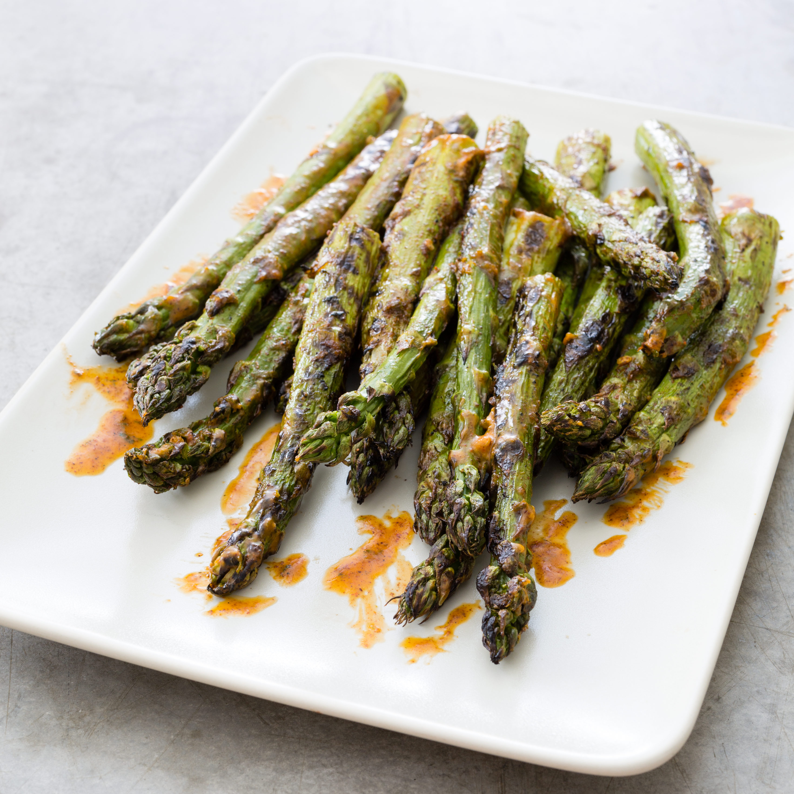

Grilled Asparagus

Description
Searching for the best summer side dish that comes together in minutes? Look no further than this easy grilled asparagus that’s tossed in olive oil, seasoned with salt and pepper, and grilled until perfectly tender.
Ingredients
- 1 pound fresh asparagus spears, trimmed
- 1 tablespoon olive oil
- salt and pepper to taste
Steps
- Preheat an outdoor grill for high heat and lightly oil the grate.
- Lightly coat the asparagus spears with olive oil. Season with salt and pepper to taste.
- Cook asparagus on the preheated grill, turning often until lightly charred and fork-tender about 3 to 5 minutes.